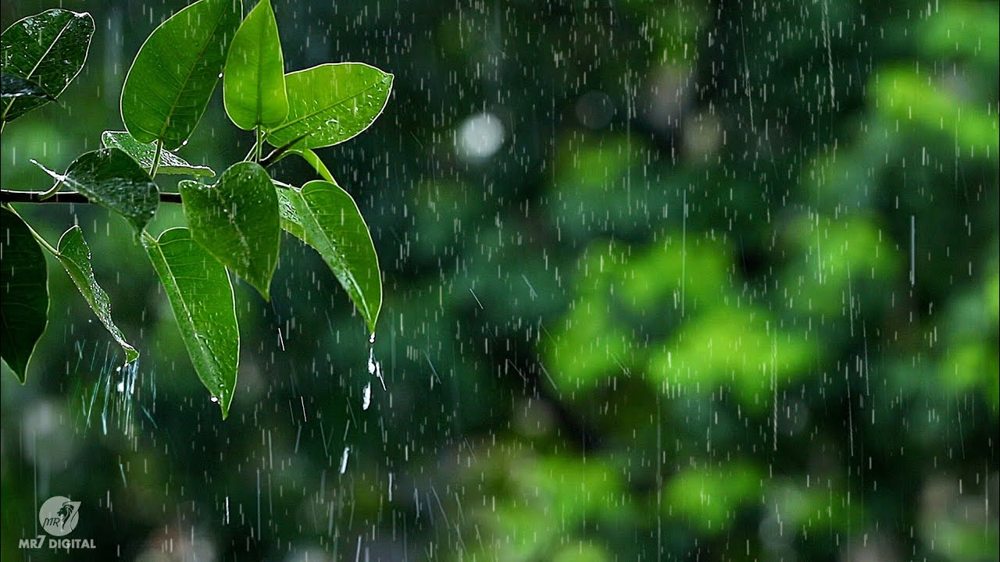

THE BEAUTY OF NATURE TRAVEL: A BLOG ROUNDUP
“Our task must be to free ourselves… by widening our circle of compassion to embrace all living creatures
and the whole of nature and its beauty.” -Albert Einstein
Whether you call it nature travel, sustainable travel or responsible ecotourism, there’s something incredibly potent, powerful, and cleansing about getting away from the hustle and bustle of the city. The air smells sweeter, the sun burns brighter, the colors seem more vivid, and time almost seems to stand still. Whether we’re hiking, kayaking, watching wildlife or just enjoying a quiet picnic, there’s something about unspoiled nature that simply soothes our soul.
With Earth Day coming up April 22, people tend to start thinking and talking about nature conservation more and more at this time of year. But our goal is to encourage people to embrace the beauty of nature and wildlife all year around. So when some of our blogging friends discussed having a monthly themed blog carnival, we immediately volunteered to host a Nature Travel round-up this month to draw more attention to the joys of ecotourism.
So how does it work? Well, if you’re a reader, click on some of the links below to discover some great bloggers writing about some of their favorite Nature Travel experiences, which will hopefully inspire your future adventures. And if you’re a blogger with a Nature Travel story of your own to share, just follow these simple steps:
1. Click on the “add” link below and follow the steps in the dialogue box. You can add an old or new post, but make sure the post you’re adding is about Nature Travel in some form or fashion.
2. Add an addendum to your participating post indicating that it’s part of a Nature Travel roundup, with a link back to this page.
3. Read through the other roundup contributions and get to know some of the bloggers behind them.
It’s as easy as that! Looking forward to reading and sharing our love of Nature Travel with you all. –Bret Love

The True Value of Trees
During this time of year, a lot of us are thinking about trees. For those who celebrate Christmas, a tree is usually the centerpiece for a family gathering around December 25. But that’s not the only time when we honor trees. Across the country, we commemorate trees on National Arbor Day, the first Friday in April; National Love a Tree Day, designated as May 16; National Tree Day, which is the first Sunday of August; and Look for an Evergreen Day, December 19th of each year. I’m sure I’m not the only who loves trees.
Of course, trees do a lot more for us than serve as the inspirers of holidays. They’re important to us as the producers of food crops, medicines and wood products. They also provide ecosystem services, a concept that allows researchers to quantify the benefits that nature contributes to people into monetary units. And surprisingly, perhaps, a new study suggests that trees provide greater economic value when they’re used to regulate air quality and climate than when they’re employed to supply products made from wood.
Trees regulate the climate by storing carbon, a greenhouse gas. But all the carbon sequestered in forests and trees worldwide could be thrown back into the atmosphere if large numbers of trees burn in forest fires. Trees can also stop scrubbing carbon dioxide from the air if they die due to drought or insect damage. Unfortunately, the likelihood of those threats impacting forests is increasing nationwide, making relying on forests to soak up carbon emissions a much riskier prospect.

Welcome Rain
Back in the days before "climate change" entered our vocabulary, rain was generally a negative development. While most of us enjoyed the patter of rain on our roofs when we were safely indoors or relished an occasional walk in the rain (if garbed in foul weather gear), rain often interfered with outdoor activities, cancelled sporting events and ruined festivals, picnics or concerts.
These days, however, rain is generally a gift, especially in drought-plagued areas. Here in central Missouri, an overnight rain was more than welcome, recharging streams that have been sluggish for months. Indeed, much of the Mississippi River watershed remains in drought mode and low river levels have hampered vital barge traffic.
Of course, global warming has and will bring excessive rain to some coastal regions and will fuel strong thunderstorms across most of the country. But steady, nourishing rain will likely be welcomed in many areas and, when it occurs, will be greatly appreciated.